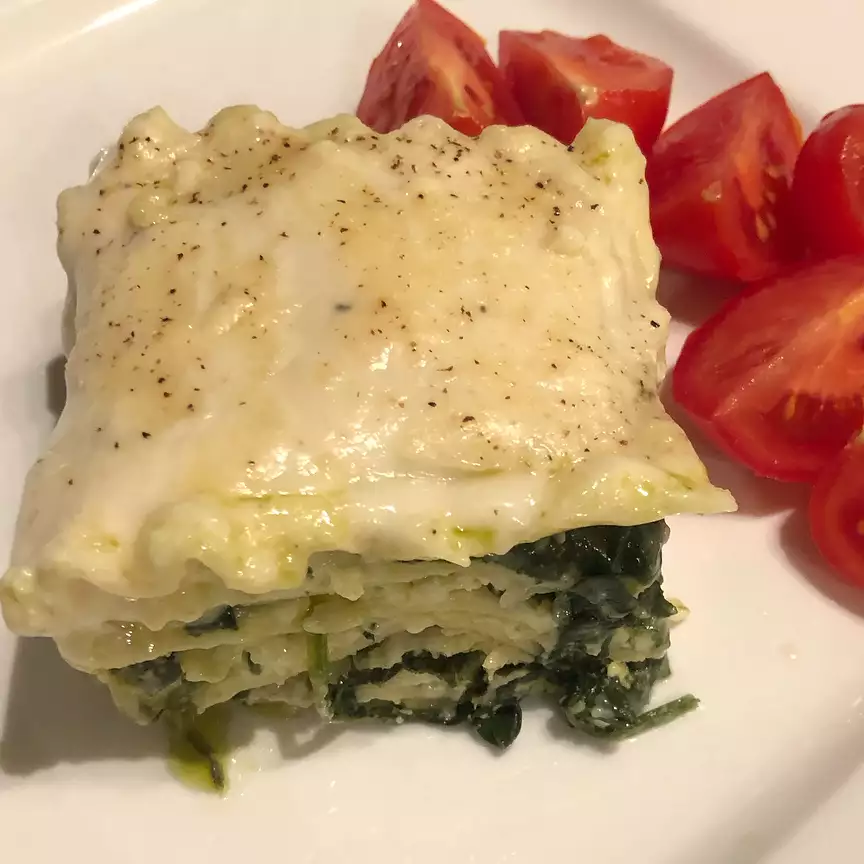

Lasagna Recipe
Ingredients
- 1(16oz) Pack of Lasagna noodles
- 2 tablespoons of olive oil
- 1 small onion chopped
- 1(16oz) package of frozen chopped spinach thawed
- 7oz basil pesto
- 30oz ricotta cheese
- 1 egg
- 1/2 teaspoon salt
- 1/4 teaspoon nutmeg
- 2 cups mozzrella cheese shredded
- 9 ounces Alfredo-style pasta sauce
- 1/4 cup grated parmesan cheese
Directions
- Preheat Oven to 350 degrees F(175 degrees C)
- Bring a large pot of lightly salted water to a boil. Add lasagna and cook for 8-10 minutes or until al dente then drain
- Using a large skillet over medium heat, saute onion in olive oil under tender. Stir in spinach;Remove from heat and stir in pesto.
- In a large bowl mix ricotta cheese, egg, salt, pepper, and nutmeg.
- In a 3-quart greased baking dish, layer noodles then spinach mixture, followed by ricotta mixture.
Sprinkle with mozzarella cheese. Repeat the layers ending with noodles on top.
Spread Alfredo sauce on top of noodles and sprinkle with parmesan cheese.
- Cover with foil and bake in the preheated oven for 45-55 minutes.
Nutrition Facts
Per Serving: 712 Calories; protein 36.6g; carbohydrates 53.7g;
fat 40.4g; cholestorl 97.6mg; sodium 1071.3mg
Return to Main Page